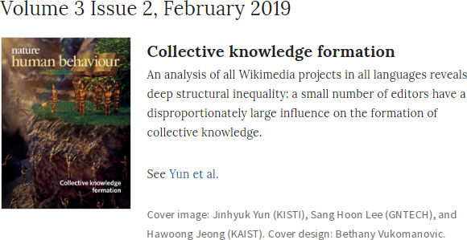

I am an Associate Professor at School of AI Convergence, Soongsil University.
I study human knowledge as a living interactive network, and how ideas diffuse through it. My research runs across collective knowledge platforms (Wikipedia, Wikidata, GitHub, Stack Overflow), the evolution of science and technology (papers and patents), and creativity in cultural domains (art and music). Currently, my work examines how AI agents produce, distort, and diffuse knowledge.
Research interests:
- Collective Knowledge & Platforms
- Network Science & Complex Systems
- Data Science & Machine Learning
- Computational Social Science
- Cultural Science & Art Evolution
- Scientometrics & Citation Dynamics
Max Planck Institute for Security and Privacy (MPI-SP)
Bochum, Germany (Data Science for Humanity Group)
School of AI Convergence
Soongsil University
Homepage
School of AI Convergence
Soongsil University
Homepage
Future Technology Analysis Center, Korea Institute of Science and Technology Information (KISTI)
Homepage
Naver Search, Naver Corporation
Homepage
Korea Advanced Institute of Science and Technology (KAIST)
Ph. D. in Physics (Thesis: Theoretical Study on Spreading in Human Society, Advisor: Hawoong Jeong)
Complex Systems and Statistical Physics Lab.
Lab. Homepage
Korea Advanced Institute of Science and Technology (KAIST)
B.S. in Physics
Institut national des sciences appliquées de Lyon (INSA Lyon), France
Seungheon Baek (백승헌), Jinhyuk Yun (윤진혁)
e-print arXiv:2508.13507,
Signal Processing: Image Communication, 117665 (2026).
Jin Kim (김진), Byunghwee Lee (이병휘), Taekho You (유택호), Jinhyuk Yun (윤진혁)
e-print arXiv:2503.13531,
PNAS 123(30), e2517969123 (2026).
Gahyoun Gim (김가현), Jinhyuk Yun (윤진혁), Sang Hoon Lee (이상훈)
e-print arXiv:2502.17841,
EPJ Data Science 14, 56 (2025).
Taekho You (유택호), Jinseo Park (박진서), June Young Lee (이준영), Jinhyuk Yun (윤진혁)
e-print arXiv:2312.07844,
Journal of Informetrics 19(3), 101670 (2025).
Seoyoung Park (박서영), Sanghyeok Park (박상혁), Taekho You (유택호), Jinhyuk Yun (윤진혁)
e-print arXiv:2402.19329,
Humanities Social Sciences Commununications 12, 76 (2025).
Taekho You (유택호), June Young Lee (이준영), Jinseo Park (박진서), Jinhyuk Yun (윤진혁)
e-print arXiv:2301.01926,
Quantitative Science Studies 5(4), 906–921 (2024).
Jinhyuk Yun (윤진혁)
New Phys.: Sae Mulli 74: 728-738 (2024).
Gangmin Son (손강민), Jinhyuk Yun (윤진혁), Hawoong Jeong (정하웅)
e-print arXiv:2202.07252,
EPJ Data Science 12, 62 (2023).
Jisung Yoon (윤지성), Jinseo Park (박진서), Jinhyuk Yun (윤진혁), Woo-Sung Jung (정우성)
e-print arXiv:2202.01466,
Journal of Informetrics 17(4), 101455 (2023).
Eunrang Kwon (권은낭), Jinhyuk Yun (윤진혁), Jeong-han Kang (강정한)
Data in Brief, 48 109200 (2023).
Jin Min Kim (김진민), Jae Hwan Lee (이재환), Jinhyuk Yun (윤진혁), Wooseop Kwak (곽우섭)
Journal of the Korean Physical Society 82(7), 623-6238 (2023).
Eunrang Kwon (권은낭), Jinhyuk Yun (윤진혁), Jeong-han Kang (강정한)
e-print arXiv:2111.14342,
Journal of Informetrics 17(1), 101380 (2023).
Sungyong Kim (김성용), Jinhyuk Yun (윤진혁)
e-print arXiv:2207.04717,
Journal of the Korean Physical Society 81(7), 697-706 (2022).
Juyoung Kim (김주영), Jinhyuk Yun (윤진혁)
e-print arXiv:2203.14077,
Journal of the Korean Physical Society 81(2), 179-190 (2022).
Taekho You (유택호), Jinseo Park (박진서), June Young Lee (이준영), Jinhyuk Yun (윤진혁), Woo-Sung Jung (정우성)
e-print arXiv:2106.15166,
Journal of Informetrics, 16(2) 101294 (2022).
Jinhyuk Yun (윤진혁)
e-print arXiv:2110.15513,
Journal of Informetrics, 16(2) 101291 (2022).
Kim Danu (김단우), Lee Damin (이다민), Jaehyeon Myung (명재현), Changwook Jung (정창욱), Inho Hong (홍인호), Diego Sáez-Trumper, Jinhyuk Yun (윤진혁), Jung Woo-Sung (정우성), Meeyoung Cha (차미영)
Journal of KIISE 49(5), 347-353 (2021)
Jinhyuk Yun (윤진혁), Sejung Ahn(안세정), June Young Lee (이준영)
e-print arXiv:2004.05904,
Journal of Informetrics 14(4), 101099 (2020).
Jinhyuk Yun (윤진혁), Sang Hoon Lee (이상훈), and Hawoong Jeong (정하웅)
e-print arXiv:1610.06006,
Nature Human Behaviour 3 103 (2019)
- Featured on the journal cover:

Jisung Yoon (윤지성), Jinhyuk Yun (윤진혁), Woo-Sung Jung (정우성)
e-print arXiv:1804.00026,
New Phys.: Sae Mulli 68, 647-654 (2018).
Jinhyuk Yun (윤진혁), Sang Hoon Lee (이상훈), and Hawoong Jeong (정하웅)
e-print arXiv:1510.06092,
Phys. Rev. E 93, 012307 (2016).
- Featured in APS Physics Focus
Jinhyuk Yun (윤진혁), Pan-Jun Kim (김판준), and Hawoong Jeong (정하웅)
e-print arXiv:1405.0917,
PLoS ONE 10(2): e0117388 (2015).